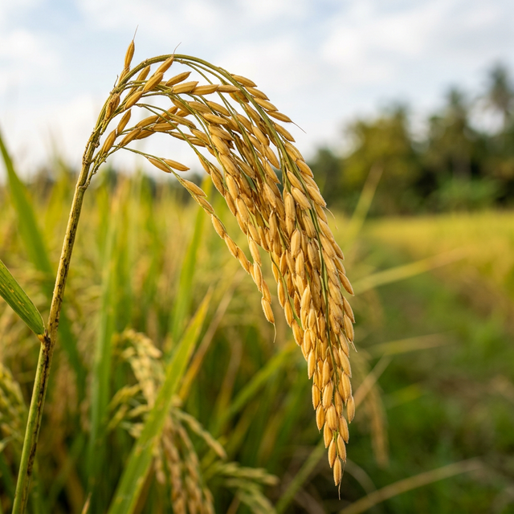

Introduction to Rice Farming
- Staple crop and principal food grain in Andhra Pradesh (often called India's "Rice Bowl").
- Area: around 19–20 lakh hectares annually; major districts include West Godavari, Krishna, East Godavari, Kakinada, Nellore.
- Productivity: high in irrigated areas (4–5+ t/ha possible with good practices; overall 4–7 t/ha depending on variety and management).
- Two main seasons:
- Kharif (monsoon): Sown/transplanted June–July; harvested November–December.
- Rabi (winter): Sown/transplanted Nov–Dec/January; harvested March–April/May.
- Popular varieties (ANGRAU and recent releases): MTU series (MTU-7029 Swarna, MTU-1010, MTU-1121 Sridhruti, MTU-1153 Chandra, MTU-1156 Tarangini), BPT-5204 (Samba Mahsuri), RNR-15048 (Telangana Sona), NLR-34449 (Nellore Mahsuri), DRR Dhan lines and biofortified types. Choose certified seeds suited to your zone.
Key Temperature & Climate
Rice thrives in hot, humid climates with abundant water. Ideal temperatures range between 20°C and 35°C throughout the growing season.
Step 1: Soil Preparation
Rice thrives in heavy soils that retain water well. Ideal soils are clay loam, silty clay loam, or heavy clays (typical of deltaic areas); soil pH ranges from 5.5 to 8.0 (slightly acidic to neutral) are acceptable.
Detailed Process:
- Field Clearance: Clear the field of weeds, stubble, and residues from the previous crop to prevent pest carryover.
- Bund Strengthening: Repair and strengthen bunds (field boundaries) to hold 5–10 cm of water effectively.
- Pre-Tillage Flooding: Puddle the field by flooding 3–5 days before tillage to soften the soil surface.
- Ploughing: Plough 2–3 times (first dry, then wet) using a tractor or bullock plough to achieve a fine tilth.
- Puddling: Perform wet ploughing (puddling) to reduce weeds, percolation, and aid root establishment.
- Precise Levelling: Level the field precisely for uniform water depth to avoid localized water stress and nutrient loss.
- Organic Manuring: Incorporate organic matter (FYM/compost at 5–10 t/ha) or use green manures like sunhemp.
- Basal Fertilization: Apply basal fertilizers based on soil tests; typically 120–150 kg N, 60 kg P2O5, and 60 kg K2O/ha in split doses.
Step 2: Sourcing Seeds
High-quality seeds are the foundation of a good harvest. Buy certified seeds to ensure high germination rates.
Detailed Process:
- Select Variety: Choose a variety suited to your region (e.g., MTU-1010 for early, MTU-7029 for late Kharif).
- Verify Source: Purchase from reliable sources like APSSDC, ANGRAU centres, or certified private suppliers.
- Check Quality: Ensure the seed tag indicates 80%+ germination and high physical purity.
- Calculate Seed Rate: Prepare 20–30 kg/ha for conventional or 1–2 kg/ha for SRI methods.
- Seed Treatment: Pre-soak and treat seeds with fungicides (e.g., Carbendazim) to prevent seed-borne diseases.
Step 3: Transplanting
Transplanting is a critical phase that determines the crop's establishment and uniform growth.
Detailed Process:
- Nursery Preparation: Allocate 1000 m² nursery area per hectare, use FYM, and sow pre-germinated seeds in wet beds.
- Seedling Age: Ensure seedlings are at the right age (20–25 days for conventional; 8–12 days for SRI).
- Field Preparation: Ensure the main field is puddled and has 3–5 cm of standing water during transplanting.
- Transplanting Depth: Plant seedlings shallow (2-3 cm) to encourage quick tillering.
- Spacing: Use 20×15 cm for conventional or 25×25 cm for SRI; use markers for straight rows.
- Gap Filling: Check the field within 7–10 days and fill any gaps where seedlings didn't survive.
- Water Management: Maintain shallow water initially, increasing to 5–10 cm during the tillering-to-flowering stage.
Step 4: Harvesting
Timely harvesting ensures maximum grain quality and minimum field losses.
Detailed Process:
- Maturity Check: Harvest when 80–85% of grains are golden yellow and grain moisture is ~20–25%.
- Cutting: Cut panicles manually with a sickle or use a combine harvester; cut close to the ground for straw utility.
- Bundling: Bundle the harvested crop and bring it to the threshing floor immediately.
- Threshing: Thresh manually or mechanically to separate grains from the straw.
- Cleaning: Clean the grains of any chaff, stones, or dust using winnowing or mechanical cleaners.
- Drying: Dry the grains on mats or yards until moisture reduces to 12–14% for safe storage.
- Storage: Store in cool, dry structures and grade appropriately to prevent pest infestation.
Pro Tip: Nutrients Matter
Ensure your soil has adequate nitrogen, phosphorus, and potassium. We highly recommend using our Soil Testing Service before you start.